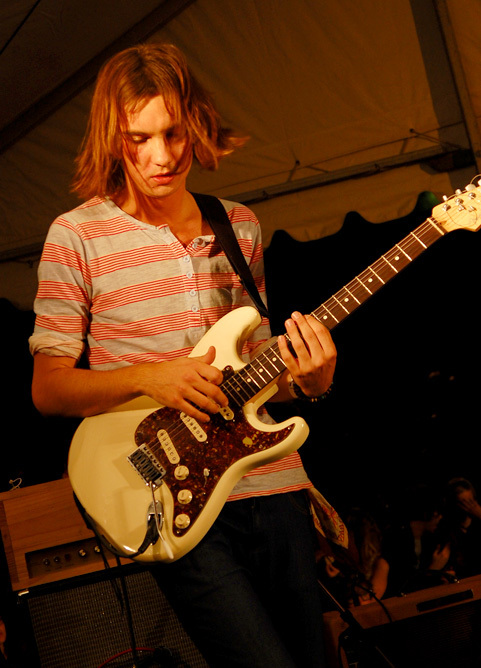
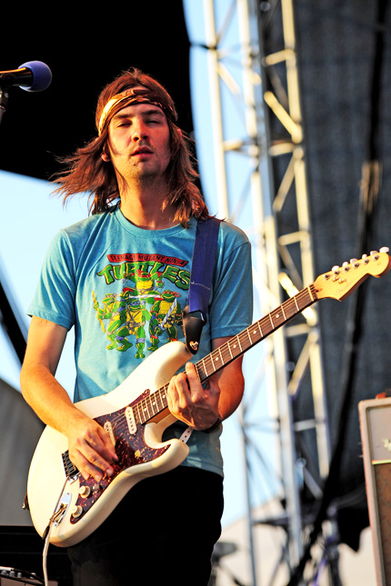
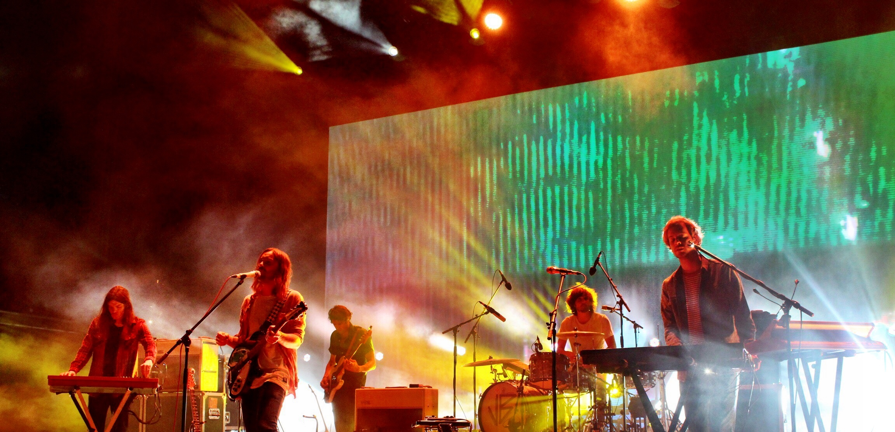

A empreitada sonora de Kevin tem suas origens na cena local de Perth. Parker tocou num grande número de bandas menores, uma delas sendo o The Dee Dee Dums, um duo de rock duo que consistia no guitarrista com o Luke Epstein (bateria) em que a música de mais sucesso era "You haven't been telling Truth", que mais tarde se tornaria "Half Full Glass Of Wine", já do próprio Tame.
O Tame Impala propriamente dito surgiu em 2007 como um projeto solo de gravação caseira do Kevin Parker em que ele postava algumas faixas produzidas no Myspace. Isso trouxe o interesse de vários selos e no fim ele assinou um acordo mundial com a Modular Records em julho de 2008. Para passar as gravações caseiras para o palco, Parker pediu a ajuda de seus velhos amigos da cena local, Dominic Simper (baixo) e Jay Watson (bateria), para começarem a tocar em shows na região. Kevin Parker, em uma entrevista para Rick Rubin em abril de 2020, confessou que teve vergonha de dizer que havia composto e gravado todas as músicas sozinho antes de assinar o contrato e consequentemente a Modular realmente acreditou que se tratava de uma banda e divulgou o projeto como tal por pelo menos seus 2 primeiros álbuns.
Em setembro de 2008 o primeiro EP foi lançado com o nome homônimo. Devido a capa, que foi feita por Kevin, houve confusões na época se o EP era homônimo ou se chamava "Antares Mira Sun". Na capa, inspirado diretamente pelo curso de astronomia que o músico frequentava na época, ele criou uma comparação entre os tamanhos das estrelas Antares, Mira e o Sol (Sun).
O EP atingiu o topo da parada de lançamentos independentes australianos, sendo que as músicas "Desire Be, Desire Go", "Skeleton Tiger" e a já citada "Half Full Glass Of Wine" acabaram sendo tocadas em todo o país pela rádio local Triple J. Esse sucesso inicial abriu as portas para o projeto abrir shows das bandas The Black Keys e MGMT, dentre outros, além de uma turnê australiana de divulgação do EP em 2008. Durante uma apresentação em Melbourne o gerente da MGMT ficou surpreso ao vê-los tocando descalços e ofereceu a eles suporte para tocarem em uma tour na Austrália.
Já em 2009, o Tame teve uma sequência de 6 shows nacionais esgotados e 5 shows agendados na Inglaterra, com apresentações no V Festival e Groovin The Moo. Em janeiro de 2009 o projeto apareceu na lista das 100 melhores músicas de 2008 pela Triple J, em que o single "Half Full Glass Of Wine" aparecia na 75ª posição. A canção, inclusive, foi usada no final de um dos episódios da série Entourage da HBO.
O primeiro single do Tame Impala, "Sundown Syndrome", foi gravado nos estúdios Toerag em Londres com o engenheiro de gravações Liam Watson, enquanto o projeto estava na Inglaterra em Março de 2009. A canção "Sundown Syndrome" foi lançada por Richard Kingsmill no seu show na Triple J em Maio de 2009, enquanto que o vinil em Julho de 2009, com o lado B sendo um cover de "Remember Me", do DJ Blue Boy.
O projeto foi o headliner inaugural do "Rottofest" em agosto de 2009, um festival de comedia, cinema e música anual que acontece na ilha Rottnest na orla da Austrália Ocidental. Na sequência embarcaram para uma tour nacional entre setembro e outubro para divulgado o single. "Remember Me" apareceu no posto número 78 na lista das 100 melhores da Triple J em 2009.
Depois eles estiveram presentes no festival australo-neozelandês Big Day Out, apresentando-se ao lado de bandas como Muse, The Mars Volta, Kasabian e Rise Against.
"Sundown Syndrome" estava na trilha sonora do filme indicado ao Oscar Minhas Mães e Meu Pai.
Em Maio de 2010, o Tame Impala lançou seu álbum de estreia, InnerSpeaker, recebendo aclamação da crítica especializada. A Pitchfork, por exemplo, o nomeou com seu selo de Best New Music. A partir daí, Kevin e seu companheiros estiveram ocupados com a tour de divulgação do álbum do meio para o fim de 2010, começando em 13 de maio de 2010, abrindo para o MGMT na sua turnê pelos Estados Unidos. O projeto voltou para a Australia para tocar no festival de música Splendour in the Grass, seguindo posteriormente para uma tour pela Europa em Julho (com uma aparição no Reading Festival inglês e no Super Bock Super Rock, fazendo assim a sua estreia em terras portuguesas) e uma nova tour australiana em outubro. Em novembro voltaram para a Inglaterra e Europa para uma tour de quinze datas, incluindo seu maior show em Londres até o momento no qual compareceram Noel Gallagher, Tom Meighan, Sergio Pizzorno, Noel Filding, Alexa Chung y Alison Mosshart, para logo voltarem para os Estados Unidos e Canadá para vinte datas incluindo shows esgotados em Toronto, Nova Ioque, Los Angeles e São Francisco. No final do ano, o Tame Impala recebeu quatro nomeações no ARIA Music Awards de 2010 para "Álbum do Ano" e "Melhor Álbum de Rock" (para o InnerSpeaker), "Melhor Grupo" e "Melhor Novo Artista". Em Novembro de 2010, o álbum foi eleito o melhor do ano no J Awards da rádio Triple J. Não tivemos nenhum grande single nele, mas músicas como "Why Won't You Make Up Your Mind" seguem na cabeça de muitos fãs, como o rapper A$AP Rocky, que utilizou a base da canção para o seu single Sundress.
Em outubro de 2012 foi lançado o segundo álbum do Tame Impala, Lonerism, com produção de Dave Friedman. Parker disse que o álbum "representa um afastamento de seus trabalhos anteriores incorporando uma maior paleta sonora, letras mais emotivas e uma perspectiva narrativa mais pronunciada". Ele foi desenvolvido em um ambiente similar ao Innerspeaker, em que Parker escreveu e gravou a maioria do álbum sozinho em sua casa em Perth, Australia. Partes das gravações, entretanto, também ocorreram em outro estúdio caseiro do Kevin na França.
Estando na França, Parker produziu e tocou no álbum homônimo de dream pop da Melody's Echo Chamber, o projeto da cantora francesa Melody Prochet. Como resultado, uma das músicas do Lonerism chama-se "Endors Toi", que se traduz do francês para o português como "adormecer". A capa do álbum é uma foto tirada pelo Kevin nos Jardins de Luxemburgo em Paris, França, com a posterior edição de Leif Podhajsky, um desenhista gráfico que criou a capa do Innerspeaker. A imagem entrelaça os temas de solidão do álbum, com uma porta de metal separando o espectador das pessoas nos jardins.
Em Julho de 2012, o Tame lançou de graça para download a música "Apocalypse Dreams". O primeiro single de fato, "Elephant",
foi lançado no mesmo mês. Em Agosto
de 2012, Kevin e seus parceiros
fizeram pela primeira vez uma turnê na América do Sul,
com 3 datas no Brasil. O álbum foi lançado mundialmente em Outubro de 2012. StillinRock o descreveu como o melhor álbum do ano. As duas músicas citadas anteriormente curiosamente
foram co-escritas pelo Jay Watson. O segundo single do álbum foi "Feels Like We Only Go Backwards".
Em Setembro de 2012, o Tame Impala foi capa pela primeira vez de uma revista especializada em música. No caso, a 82ª edição da The FADER.
Em Novembro de 2012, Lonerism gahou o J Award de 2012 como o Álbum Australiano do Ano. Foi a segunda vez que Tame Impala ganhou esse prêmio, depois de também ter ganho pelo seu álbum de estreia em 2010. É o primeiro projeto que ganhou essa premiação por mais de uma vez. Em Janeiro de 2013, o Lonerism foi eleito pela Rolling Stone como o Álbum do Ano de 2012 assim como havia acontecido com o Innerspeaker em 2011. A NME também o anunciou como o álbum do ano. Outros veículos como a Triple J, Filter, Urban Outfitters, FasterLouder e Obscure Sound também o elegeram como o Álbum do Ano. "Elephant" e "Feels Like We Only Go Backwards" apareceram nos postos número 7 e 9, respectivamente, nas 100 músicas da Triple J do ano de 2012.
O projeto começou com uma tour mundial de 2012 para 2013, com a banda The Growl como abertura. Durante esta tour, o Tame tocou em grandes festivais, como o Coachella e o Sasquatch Festival, e foi convidado do programa do Jimmy Fallon. Nessa tour, Jay Watson passou da bateria para os teclados e Parker recrutou Julien Barbagallo para a bateria. Em Maio de 2013, foi anunciado através do Facebook que Nick Allbrook deixou de fazer parte do line-up ao vivo do projeto para focar no seu projeto musical Pond, e que Cam Avery ex-Pond e The Growl iria tomar o seu lugar. O último show em que Allbrook tocou com o projeto foi na última data da tour australiana de 2013, no Anfiteatro Belvoir de Perth, o mesmo lugar onde Allbrook tocou pela primeira vez com eles, ainda em 2008. Como um gesto de despedida, o Tame fez uma versão de "Prototype", do Outkast.
com os álbuns de bandas americanas como o Modern Vampires Of The City, do Vampire Weekend, e o Hesitation Marks, do Nine Inch Nails, o Lonerism recebeu uma indicação para Melhor Álbum Alternativo na premiação dos Grammys.
Tanto "Elephant" como "Feels Like We Only Go Backwards" tiveram números expressivos. O primeiro atingiu a #8 na parada Alternative Airplay americana e hoje conta com mais de 200 milhões streamings no Spotify. Já o clipe do segundo single é, atualmente, o mais visto do projeto no Youtube, enquanto que a música tem mais de 300 milhões de streamings no Spotify, sendo assim a segunda música mais ouvida do Tame Impala.
Acredita-se que Kevin Parker começou a gravar o álbum sucessor ao Lonerism no começo de 2014, devido a alguns vídeos que foram postados no Instagram que mostravem as gravações tomando forma em Western, Australia, mesmo lugar onde o álbum debut do Tame, Innerspeaker, foi gravado.[39] Antes disso, Kevin estava em tour com o Tame Impala e trabalhando em outros projetos musicais, incluindo a sua banda de disco-funk, AAA Aardvark Getdown Services. Parker disse em maio de 2013:
"Nesse momento, trabalhar em outro álbum não me emociona. É ter uma cabeça muito fechada pensar que um álbum é a única forma que se tem de fazer música, especialmente em um mundo que estamos atualmente. Tudo é possível. Temos tantas pessoas fazendo coisas interessantes com a internet e a tecnologia, pode-se ter tantas maneiras de se criar música e escutá-la. É 2013 e se pode fazer música em qualquer lugar... Temos tantas possibilidades que o meu cérebro está sobrecarregado com todas elas. Só preciso esperar, pensar um pouco mais nas coisas. Depois saberei o que fazer na sequência."
Em Maio de 2014, Kevin falou sobre sua crescente inclinação em grava um novo álbum em uma entrevista para a rádio Triple J, explicando que: "Estou cada vez mais e mais preso no mundo de criar um álbum. É estranho como isso ocorre naturalmente, quase como se fosse algo estacional. Já comecei a pensar na tracklist e todas as coisas relacionadas a um álbum".[42] Descrevendo o som do novo álbum, Parker disse "vou tentar fazê-lo un pouco mais minimalista desta vez: usar apenas o necessário... diferente de uma pizza supreme, na qual você joga todos os ingredientes lá".[43] Jay Watson completou "provavelmente será menos rockeiro e mais eletrônico de novo, ainda mais que no último álbum".[44] Posteriormente, Kevin comentou que a inspiração por trás do som mais polido do terceiro álbum veio de ouvir uma canção do Fleetwood Mac. Ele disse que o som puro e mais limpo do Fleetwood Mac o levou a tentar a criar um estilo musical mais simples com o Currents.
Em Dezembro de 2014, o amigo e produtor renomado Mark Ronson lançou a canção Daffodils, do seu futuro álbum Uptown Special, com participação especial do Kevin Parker, já dando uma pista do que poderia vir a ser a sonoridade do Currents.
Em Janeiro de 2015, a Spinning Top Music anunciou que um novo álbum do Tame iria ser lançado em 2015. Durante este mês, foi anunciado que o projeto iria se apresentar no Festival Boston Calling Music em Maio de 2015.
Em Março de 2015, a música intitulada "Let It Happen" foi lançada gratuitamente para download.
Em Abril de 2015, o Tame anunciou e divulgou a capa do novo álbum, oficialmente intitulado Currents agora, em sua conta no Facebook. Algumas horas depois o projeto lançou seu primeiro single oficial do próximo álbum chamado "Cause I'm a Man". Nesse mesmo mês, o Tame Impala lançou oficialmente "Let It Happen" como seu segundo single oficial do álbum. Uma semana depois, Kevin criou uma conta no Reddit, na qual usava para provocar seus fãs para lhe pedissem que divulgasse uma nova música, para logo responder com "Disciples", na qual se converteu no single promocional do álbum. Na mesma oportunidade, Parker afirmou "Recentemente, de todas as vendas de disco do Tame Impala fora da Austrália, eu recebi... zero dólares. Alguém em um cargo bem alto gastou o dinheiro antes que chegasse a mim. Provavelmente nunca consiga reaver essa quantia".
Em Maio de 2015, o projeto anunciou que o álbum seria lançado em 17 de Julho de 2015 e publicou o quarto single, "Eventually".
Em Novembro de 2015, o quinto e último single do projeto foi lançado, "The Less I Know The Better".
Um ano depois de ter lançado o Currents, em Julho de 2016, Parker utilizou sua conta do Instagram para anunciar que no fim do ano lançaria uma edição deluxe do álbum, incluindo 3 lados B e dois remixes. Em Outubro de 2016 foram divulgados os detalhes.
O Currents foi um sucesso tanto de crítica quanto comercial, sendo considerado por muitos como o Magnum Opus do músico até o presente momento. Vários veículos o consideraram como o Álbum do Ano de 2015, como a revista Q.[54] A Pitchfork o recebeu com o seu selo Best New Music com uma nota 9,3, e o considerou como o quinto melhor álbum de 2015.[55] A obra rendeu a Kevin Parker outra indicação ao Grammy de Melhor Álbum Alternativo, e vários outros prêmios pela ARIA Music Awards: Álbum do Ano, Álbum de Rock do Ano, Melhor Lançamento Pop para a música "Let It Happen", Melhor Grupo para o projeto e de Produtor e Engenheiro do Ano para o Kevin.
Além disso, é até o momento o único álbum do projeto que rendeu um disco de Platina no Estados Unidos(RIAA). O quarto single, "The Less I Know The Better", música que o Kevin chegou a dar para o Mark Ronson por não considerar com a cara do projeto, mas voltou atrás, hoje tem mais de 1 bilhão de streamings no Spotify e rendeu à Parker 5 discos de Platina na Autrália (ARIA), 4 discos de Platina nos Estados Unidos (RIAA)[60] e 1 disco de Platina no Reino Unido (BPI). A música foi eleita a #1 da década pela rádio australiana Triple J tendo virado viral no aplicativo de vídeos TikTok no fim de 2019. Além disso, o segundo single "Let It Happen" rendeu 1 disco de Platina tanto na Austrália como também nos Estados Unidos e 1 de Prata no Reino Unido, além de mais de 300 milhões de streamings no Spotify.
Um fato curioso dessa época foi que alguns meses depois do lançamento do álbum, a cantora Rihanna lançou o seu álbum Anti com um cover da música "New Person, Same Old Mistakes" do Currents renomeada para "Same Ol' Mistakes", mostrando que o projeto tinha potencial para atingir o mainstream em grandes mercados. A versão do projeto australiano é uma das canções mais ouvidas do Kevin, tendo alcançado mais de 200 milhões de streamings no Spotify e rendido 1 disco de Ouro na Autrália (ARIA) e 1 discos de Platina nos Estados Unidos (RIAA).
A partir desse álbum, o projeto começou a se apresentar como headliners em festivais grandes como o Primavera Sound e o Lollapalooza.
Depois da turnê de divulgação do Currents, Kevin Parker focou em expandir seus horizontes musicais trabalhando como produtor com artistas de variados gêneros e tamanhos dentro do cenário musical atual como Lady Gaga, Travis Scott, The Weeknd, Kanye West, SZA, Kali Uchis, ZHU, The Streets, Theophilus London, além de álbuns do outro projeto psicodélicos australianos parceiro de longa data, Pond.
Além disso, produziu remixes para faixas dos artistas Mick Jagger, Miguel, 070 Shake, GUM e Barbagallo.
Em Janeiro 2019, o Tame Impala foi anunciada como headliner principal do Coachella daquele ano, fato único para uma atração com forte pegada inspirada no rock surgida naquela década. Em 21 de Março de 2019, o Tame lançou o single "Patience"[80] o que deu indícios que seu quarto álbum estava a caminho.[81] Alguns dias depois, eles foram anunciados como convidados musicais no Saturday Night Live de 30 de Março, com a apresentadora Sandra Oh.[82] No show, Kevin e seus colegas apresentaram "Patience" e uma nova música, "Borderline",[83] essa última vindo a ser o primeiro single do quarto álbum do projeto, o The Slow Rush.
Em Outubro de 2019, "It Might Be Time" foi lançada junto com o anúncio do nome e capa do novo álbum.
Em Dezembro de 2019, o Tame lançou "Posthumous Forgiveness".
Em Janeiro de 2020, o projeto compartilhou o single "Lost In Yesterday",[86] com o lançamento do álbum vindo no dia 14 de Fevereiro de 2020. Quando o álbum foi lançado, nos foi divulgada uma nova versão de "Borderline", em que ouvimos um baixo mais preponderante em uma vibe mais agitada, menos ambient music em relação a versão single.
"Bordeline" tornou-se um grande sucesso, tendo acumulado até aqui mais de 300 milhões de streamings no Spotify e 1 disco de Prata no Reino Unido (BPI) e um disco de Platina nos Estados Unidos. Já "Lost In Yesterday" foi o primeiro single do projeto a alcançar o topo de uma parada musical da Billboard, no caso a Adult Alternative Songs, em Maio de 2020.[89] A canção já acumula até aqui mais de 100 milhões de streamings no Spotify[38], tendo rendido um disco de Ouro nos Estados Unidos.
Josh Terry da Vice nomeou o Tame Impala como o seu "Artista da Década" de 2010, escrevendo (em tradução livre) que "Nenhum artista capturou melhor essa mistura de gêneros durante os anos 2010 do que o Tame Impala". Acrescentou: "Numa era de streamings e da bolha dos grandes festivais de música, a discografia de Kevin Parker parece feita sob medida para tanto uma platéia de milhares como para uma noite tranquila sozinho na vibe de uma playlist " e que " a música dele personifica o senso de solidão trazido pela tecnologia dessa década melhor que qualquer um dos colegas musicais dele".
Em Agosto de 2020, Kevin lançou como single oficial a faixa "Is It True".Foi o segundo single do projeto a alcançar o topo de uma parada musical da Billboard, no caso a Adult Alternative Songs, em Outubro de 2020, sendo assim o único artista a colocar 2 faixas em #1 em 2020.[92] A canção já rendeu 1 disco de Ouro na Autrália (ARIA).
A obra rendeu a Kevin Parker outra indicação ao Grammy de Melhor Álbum Alternativo. Também recebeu uma indicação para Melhor Canção de Rock por "Lost In Yesterday".
Foi indicado em 7 categorias no ARIA Music Awards de 2020, vencendo Álbum do Ano, Álbum de Rock do Ano, Melhor Grupo para o projeto e de Produtor e Engenheiro do Ano para o Kevin. Foi indicado também para Melhor Lançamento Pop para "Lost In Yesterday" e Melhor Clipe para "Is It True".